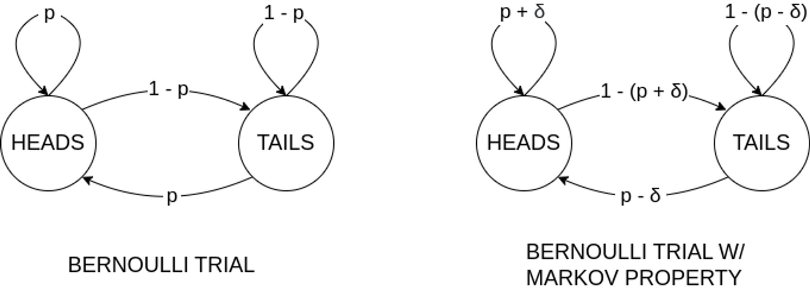
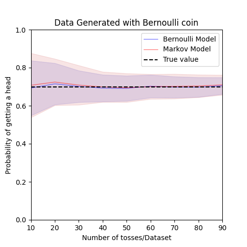
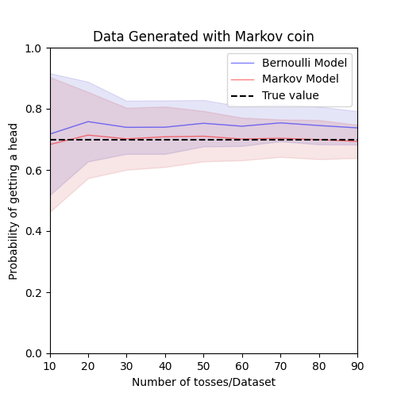
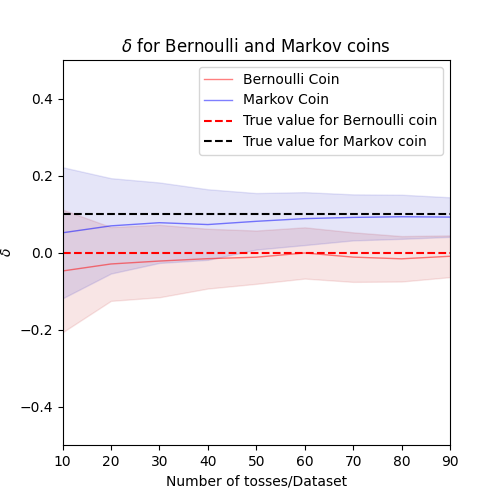

Modeling Basics and Statistical Bias
“All models are wrong, but some are useful” - George Box
Introduction
Following our discussion on the mind-projection fallacy in my previous article, I now want to delve into what happens when we model a simple scenario. In this article, I take you through a fictitious example of modelling a prediction problem. Given a coin, our task is to estimate the probability that it will land on heads when tossed. Initially, we have no idea about this coin’s behavior, but we aim to uncover its characteristics through experimentation, guided by statistical learning methods.
In the next section, I discuss what kind of models are appropriate to estimate this probability. Specifically, we explore two simple models, each with a different “capacity”—a concept I will explain later. The subsequent section presents the experiments I performed to contrast these models. Here, I introduce two different data generating processes—an approximation of the game used to collect the data—which are later utilized to fit the models. Following this, I present the results of these experiments and then engage in a discussion contrasting the applicability of these models. This journey will help us understand the nuances of model bias and variance, and how these elements influence our findings.
Methodology
First and foremost, we need a model to represent the coin’s behavior. More specifically, we aim to capture certain aspects of the data-generating process. You may recall that the process of repeated coin tosses is also known as Bernoulli trials. In this case, we assume each coin toss is independent and that each toss results in heads with a probability denoted as ‘p’. Thus, we can estimate ‘p’ by performing a number of trials and computing the value that maximizes the probability of observing the number of heads we actually get.
Before we go further, it is crucial to understand the concept of probability here. The probability represents a degree of plausibility, measured in the range of 0 and 1. This degree of plausibility is a mathematical tool and may not represent reality itself. After all, the outcome of a coin toss is binary: it is either heads or tails. In theory, we might be able to predict the exact outcome of the toss by running a sophisticated multi-physics simulation that models the dynamics of the coin toss considering factors like air resistance and gravity. However, these efforts might be overly complex. Instead, we start with a simpler model based on our intuition of the data-generating process.
Now, let us dive into generating samples. Suppose we perform \(N\) trials, resulting in m heads and n tails. It can be shown the fraction of trial in which the coin lands on heads is the maximum likelihood estimate(MLE) of \(p\). In layman’s terms, this is the value of \(p\) that maximizes the likelihood of observing the outcomes we actually did, given the data model.
The likelihood calculation unfolds as follows: we represent the outcome of trial \(i\) as \(X_i\). The probability that we observe such outcomes, conditioned on the value of \(p\) is:
\[ P(X_1, X_2, .. X_n|p) = \prod_i^n P(X_i|p) \]
Notice the right-hand side decomposes the conditional events. This is valid under the assumption the trials are independently distributed as we noted previously. Now expanding the right-hand side part of the equation is easy:
\[ \prod_i^n P(X_i|p) = p^m(1-p)^{n-m} \]
\[ \cfrac{\partial P(X_1, X_2, .. X_n|p)}{\partial p} \Biggm\lvert_{p_{MLE}}= \cfrac{\partial p^m(1-p)^{n-m}}{\partial p} \Biggm\lvert_{p_{MLE}}= 0 \]
\[ \Rightarrow p_{MLE} = \cfrac{m}{m+n} \]
Now, let us take a step further and consider a more complex model. This model, unlike the Bernoulli trials, doesn’t assume each trial to be independent. Instead, it incorporates the outcome of the previous trial into the prediction for the next one. This is known as the Markov property. In simple terms, it is like remembering the outcome of the last toss when predicting the next one. For instance, if the coin lands heads up, it is more likely to come up with heads in the next trial with a probability \(p + \delta\). If it lands tails up, the probability it lands heads in the next trial is \(p - \delta\). This is akin to saying that the coin has some ‘memory’ of the last outcome which influences the next.
This model’s complexity - or ‘capacity’ - is higher than the simple Bernoulli trial. In the context of machine learning, the capacity of a model refers to the complexity of the functions it can learn. A model with a higher capacity can learn more complex patterns, but it is also more prone to overfitting, which is the trap of modeling the random noise in the data rather than the underlying pattern. The figure below illustrates the state diagrams for both models, one without the Markov property and one with it. The added complexity of the Markov model is visible in its state diagram as asymmetric transitions heads vs tails, representing the influence of the previous trial on the next one.

To compute the likelihood for this model, we need to approach the problem differently. We are now required to estimate both \(p\) and \(\delta\). Note,the one with Markov property is generalization of the one without. By setting \(\delta=0\), we recover Bernoulli trial. The likelihood is formulated as follows:
\[ P(X_1, X_2, .. X_n|p) = P(X_o|p, \delta)\prod_i^n P(X_i|p, X_{i-1}) \]
We divide our sequence of trials into pairs of subsequent trials to simplify the likelihood computation. We can have four types of such pairs - \(HH\), \(HT\), \(TH\), and \(TT\). Suppose we have \(m\), \(n\), \(r\) and \(s\) number of occurrences of such pairs. Then the above formulation reduces to the following expression:
\[ P(X_1, X_2, .. X_n|p) = P(X_o|p, \delta) (p \ + \delta)^m(p \ - \delta)^r(1 - (p \ + \delta))^n(1 - (p \ - \delta))^s \]
This might seem complex, but it is just a mathematical way to account for the varying probabilities based on the outcome of the previous toss. The MLE values for \(p\) and \(\delta\) can be calculated using calculus, as we did before. However, due to the complexity of the model, we will estimate these values numerically by performing a grid search.
By comparing the performance of these two models - the simpler Bernoulli trial and the more complex Markov model - we can begin to understand the trade-offs between model complexity and accuracy, a concept central to the understanding of model bias and variance. When a model is too simple to capture the nuances of the data, it might have a high bias, leading to inaccurate predictions. This is often the case with the Bernoulli model, which assumes that each coin toss is independent of the others. On the other hand, a more complex model, like the Markov model, can capture more detailed patterns in the data, reducing bias. However, with increased complexity comes the risk of overfitting, which occurs when a model adapts too closely to the training data and performs poorly on unseen data. This is a manifestation of high variance.
In the following sections, we will delve deeper into these concepts, empirically contrasting the performance of these models and discussing how this simple coin toss scenario can shed light on the intricacies of model bias and variance. Stay tuned for the exciting exploration ahead!
Experiments
In total, we carry out four distinct experiments. We generate two types of datasets assuming Bernoulli trials without the Markov property and another assuming Bernoulli trials with the Markov property. We simulated these datasets by assuming \(p = 0.7\) and \(\delta = 0.1\).We arbitrarily selected these values to ensure the coin is biased in both cases, and to ensure that the data generated with the Markov property represents a more complex process than the data without it.
We vary the number of samples per dataset from 10 to 100 in steps of 10. For each of these settings, we generate 100 datasets. This allows us to accurately compute the mean values of \(p_{MLE}\) and \(\delta_{MLE}\). These experiments will provide us with a clearer understanding of how the chosen models perform under different conditions.
Results and Discussion
The results of our experiments are plotted in the figures below. Figure 2 presents \(p_{MLE}\) computed for the data generated with Bernoulli coin.The dashed line represents the true value of p, while the solid lines represent the mean values of p estimated by Bernoulli and Markov model. The shaded region represents the standard deviation for both the models. Notice both models can accurately estimate the true value of p, as indicated by the proximity of the mean value to the true value. However, the estimation by the Markov model has higher variance than the Bernoulli model. This is because the Bernoulli model has fewer parameters to capture the underlying data generation process. On the other hand, Markov model has an extra parameter \(\delta\) which may overfit to the superficial irregularities causing the estimated p to have higher variance. Figure 4 further corroborates our claim. Notice the model fits a non-zero value to \(\delta\) for all experiments.

Figure 3 presents the results of fitting our models to the data generated for the Markov coin. Since Bernoulli model assumes \(\delta = 0\), it fails to account for the Markov property and ends up estimating a higher value for \(p\) than its true value. It is interesting to note the estimated value is higher instead of lower. Why? In contrast, Markov model accurately captures the true value of \(p\) by accounting for the Markov property. We can see in Figure 4 that the model accurately predicts the value of \(\delta\).

Finally, notice the spread in all figures decreases as we increase the number of samples per dataset. This trend aligns with our expectations, as a larger dataset allows the model to capture more of the underlying pattern, thereby improving its precision. This is a clear demonstration of the bias-variance tradeoff: as we increase our sample size, our model’s variance decreases, leading to more reliable and precise estimates. It also demonstrates the bias-variance tradeoff for a model occurs in the context of a data generating process. We can comment on the capacity of a model on its own, but a discussion on bias and variance requires the context of a data generating process.

Conclusion
In this study, we explored the fundamental concepts of modelling using two basic datasets. These datasets were generated using a biased coin, incorporating both independent Bernoulli trials and a Markov property. We applied two models of varying capacity to these datasets, aiming to estimate the probability of obtaining a ‘heads’ outcome in a coin toss. Our findings revealed that the Bernoulli Model, which has lower capacity, requires fewer samples than the more complex Markov model to accurately estimate the probability for the Bernoulli coin. However, as we increased the number of samples per dataset, both models demonstrated improved precision.
Interestingly, the higher capacity of the Markov model enabled it to accurately estimate the probability for the Markov coin, while the Bernoulli model fell short in capturing the influence of the previous state. We contend that this is due to the Markov model’s higher capacity, which allows it to overfit to minor irregularities in the data, necessitating more samples to mitigate this effect. Simpler models like the Bernoulli model can readily ignore these irregularities due to its inherent assumptions about the data-generating process. However, this simplicity can lead to inaccuracies if the model fails to account for certain aspects of the data generation process, as we observed with the Markov coin.
This study’s findings illustrate a classic case of the bias-variance trade-off in modeling[1]. It is crucial to note that while much of the popular literature on bias-variance trade-off attributes the difference between prediction and ground truth to the model capacity, this argument overlooks the critical role of the data generating process. A model with greater capacity does not necessarily exhibit low bias. Also, modern machine learning theory suggests more capacious model can increase both the accuracy and the precision at the same time[2].
In conclusion, while statistical bias is a significant factor, it is just one part of the larger narrative. Other forms of bias exist in machine learning algorithms that are equally important to consider[3]. I plan to delve into these in subsequent articles, expanding our understanding of bias in machine learning.
References
[1] Hastie, T., Tibshirani, R., Friedman, J. H., & Friedman, J. H. (2009). The elements of statistical learning: data mining, inference, and prediction (Vol. 2, pp. 1-758). New York: springer. [2] Belkin, M., Hsu, D., Ma, S., & Mandal, S. (2019). Reconciling modern machine-learning practice and the classical bias–variance trade-off. Proceedings of the National Academy of Sciences, 116(32), 15849-15854. [3] Mitchell, T. M. (2007). Machine learning (Vol. 1). New York: McGraw-hill.